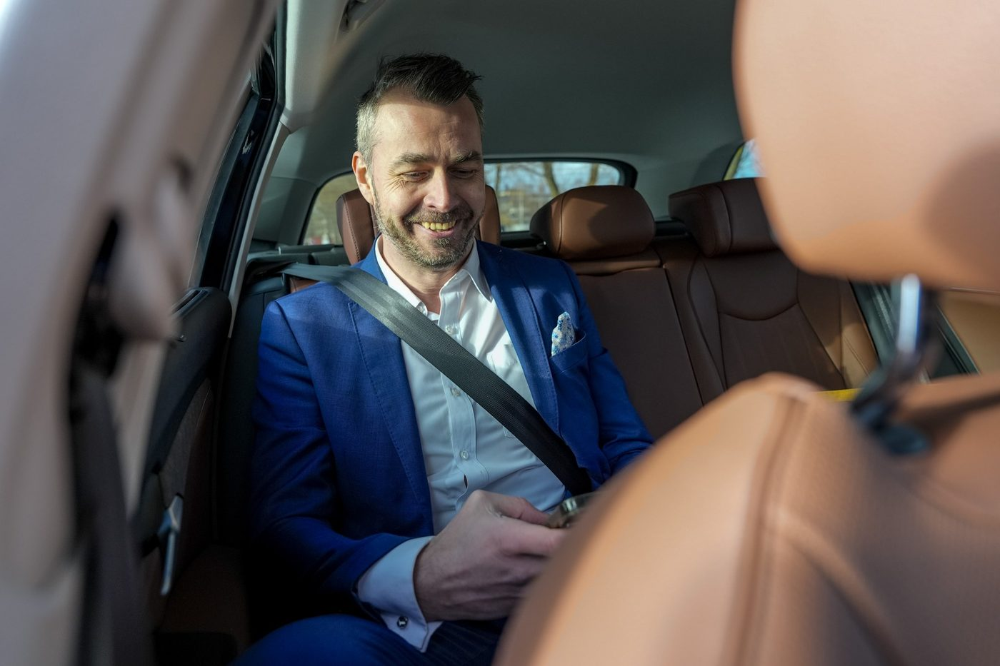

Sähköinen tilauskanava yrityksille
Tarjoamme yrityksellesi sähköisen tilauskanavan 24/7/365, jonka kautta voit tilata taksin heti tai ennakkoon ja vaivattomasti ilman lisäkuluja. Tilauksessa voit esittää erityistoiveet, myös kaluston suhteen.

Ryhdy sopimusasiakkaaksi
Syötä yrityksesi tiedot ja aloitamme sopimusasiakkuuden perustamisen.
Avaa Web Booking -tilauskanava
Saat käyttöösi sähköisen tilauskanavan, jota voi käyttää ympäri vuorokauden.
Toimi näin
- Ryhdy sopimusasiakkaaksi ja syötä yrityksesi tiedot
- Perustamme asiakkuuden ja toimitamme tunnuksen ja salasanan sekä tilausnumeron
- Voit käyttää sähköistä tilauskanavaa kirjautumalla tunnuksillanne tai tilata puhelimitse sopimusnumerolla
Sopimusasiakkaille tarjoamme kätevän koontilaskutuksen erittelyineen verkkolaskuna, joka sujuvoittaa matkakulujen hallintaa.
Vaihtoehtoisesti voit käyttää yrityksessäsi Taksi Kymenlaakso -mobiiliappiä, jonka voit ladata yrityksesi käyttöön Apple App Storesta tai Google Play -kaupasta.
Ryhdy sopimusasiakkaaksi Avaa Web Booking -tilauskanavaTaksikortti kätevään matkustamiseen
Taksikortilla maksat taksimatkat kätevästi – matkustit taksilla sitten usein tai vain silloin tällöin. Taksikortilla saat kaikki maksutapahtumasi koottuna yhdelle laskulle. Voit myös ostaa taksikortin ladattavana saldokorttina.
Lue lisää ja tilaaPalveluksessasi
Olemme arjen ahkera apuri, ja tarjoamme asiakkaillemme parasta taksipalvelua heidän päivittäisissä tarpeissaan.
Lue visiomme, missiomme ja arvommeTilaa taksi apilla ilmaiseksi
tai soittamalla 0100 87227 (1,54 € puhelu + 0,81 € / min + pvm)